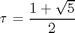
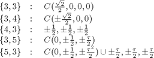
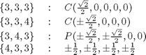
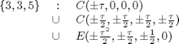
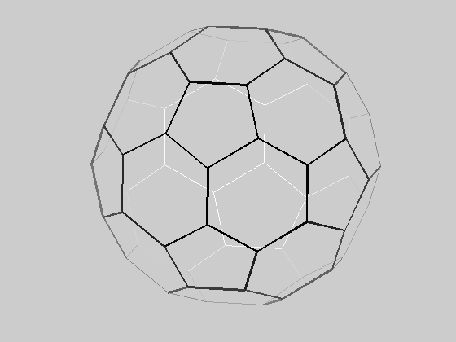
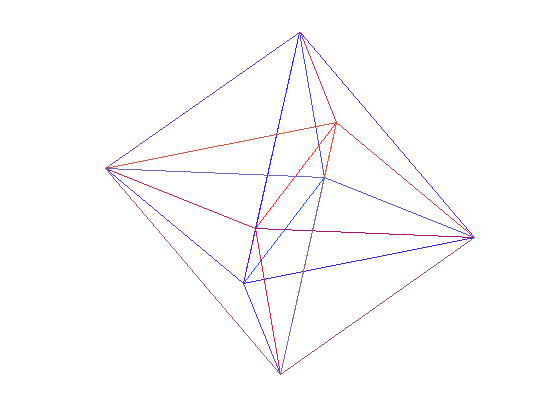
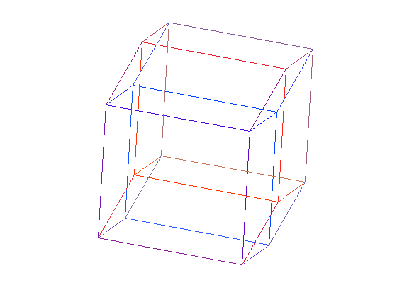
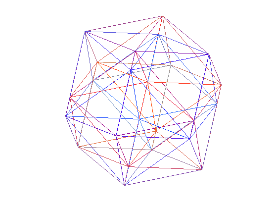
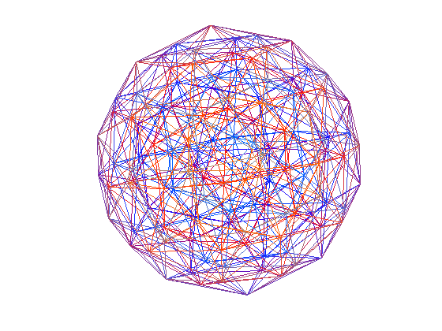
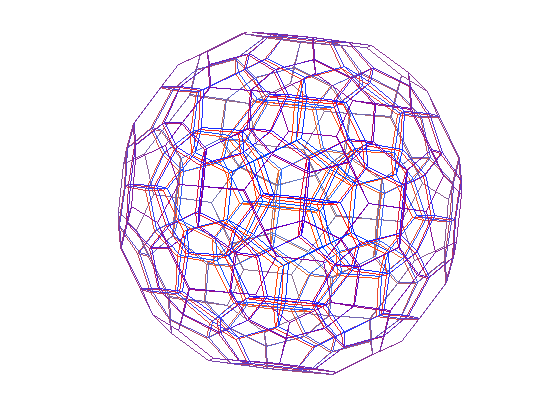

N-D Geometrical Figures
by Bill McKeeman
Using MATLAB to generate and display 3 and 4 dimensional geometric figures.
Polyhedra and Polytopes Coxeter's Regular Polytopes describes the analog of Polyhedron for all dimensions of Euclidian N-Space. The generic names as N increases from 0 to 4 are
- point
- segment
- polygon
- polyhedron
- polytope (or polychoron)
There are only three trivial cases for each N>4, so there is neither much interest nor terminology. The three are called the n-simplex, the n-cross and the n-measure.
The main trick in computing the figures is using permutations to generate the vertex sets and then post-analysis of the vertex sets to extract other features.
I looked up some formulae. Let C stand for all Circular shifts of a vector, P for all permutations of a vector and E for all even permutations. The "names" {p,q} are the Schlafli symbols for the five regular figures in 3-D and {p,q,r} are the same for the six regular figures in 4-D.
Vertex Sets




![$$ \begin{array}{rcl} \{5,3,3\} &:& P(0,0,\pm\tau^2,\pm\tau^2) \\ &\cup\ & P(\pm\frac{\tau^2}{2},\pm\frac{\tau^2}{2},\pm\frac{\tau^2}{2}, \pm\sqrt 5\frac{\tau^2}{2})\\ &\cup\ & P(\pm\frac{\tau^3}{2},\pm\frac{\tau^3}{2},\pm\frac{\tau^3}{2}, \pm\frac{1}{2}) \\ &\cup\ & P(\pm\frac{\tau}{2},\pm\frac{\tau}{2}, \pm\frac{\tau}{2},\pm\frac{\tau^{-2}}{2}) \\ &\cup\ & E(\pm\frac{1}{2},\pm\frac{1}{2},\pm\frac{\tau^2}{2},0)\\ &\cup\ & E(\pm\sqrt 5\frac{\tau^2}{2},\pm\frac{\tau}{2}, \pm\frac{\tau^3}{2},0) \\ &\cup\ & E(\pm\tau^2,\pm\frac{\tau^2}{2}, \pm\frac{\tau^3}{2},\pm\frac{\tau}{2}) \end{array} $$](polydemo_eq15535.png)
Contents
- Computing Vertices
- Feature Count for 3-D Regular Polyhedra
- Draw the Tetrahedron, Octahedron, Cube, Icosahedron, Dodecahedron
- Bucky Ball
- 4-D Polytopes
- Feature Count for 4-D Regular Polyhedra
- Edge Plot of 4-D Cross Polytope (analog of octahedron)
- Edge Plot of Hypercube (tesseract)
- Edge Plot of 4-D 24-cell (unique to 4-D)
- Edge Plot of 4-D 600 Cell (analog of icosahedron)
- Edge Plot of 4-D 120 Cell (analog of dodecahedron)
- N-D for N>4
The WWW pages for Mathematica, a product of Wolfram Research, have many related kinds of figures (concave, expansions, prisms) but those additonal figures are not treated here. You could also look at some of these other things in The Derived Polytopes in Euclidian N-Space, William Marshall McKeeman, Master of Science thesis, The Columbian College of The George Washington University, (June 7, 1961). Anyway, back to the main story:
Computing Vertices
Using a permutation generator, we can generate the vertex sets for regular polyhedra with edge length 1. For instance, the cube {4,3} with unit edge centered on the origin has 8 vertices and the analogous hypercube {4,3,3} has 16. They could be generated as follows
s43 = perms([1 1 1]/2, 'signs'); % cube s433 = perms([1 1 1 1]/2, 'signs'); % hyper cube
The details are tucked away in my MATLAB function vertices. Here are the calls.
s33 = vertices('s33'); % tetrahedron s34 = vertices('s34'); % octahedron s43 = vertices('s43'); % cube s35 = vertices('s35'); % icosahedron s53 = vertices('s53'); % dodecahedron
Feature Count for 3-D Regular Polyhedra
The vertex sets can be examined to count the edges and faces.
format compact fprintf ' tetra octa cube icosa dodeca\n' fprintf('%6d %6d %6d %6d %6d vertices\n', ... size(s33,1),size(s34,1),size(s43,1),size(s35,1),size(s53,1)); fprintf('%6d %6d %6d %6d %6d edges\n', ... nedge(s33),nedge(s34),nedge(s43),nedge(s35),nedge(s53)); fprintf('%6d %6d %6d %6d %6d faces\n', ... nface(s33),nface(s34),nface(s43),nface(s35),nface(s53));
tetra octa cube icosa dodeca
4 6 8 12 20 vertices
6 12 12 30 30 edges
4 8 6 20 12 faces
Draw the Tetrahedron, Octahedron, Cube, Icosahedron, Dodecahedron
The regular polyhedra and polytopes can be displayed using MATLAB. The displays are "shadows of edges" (technically projections onto the xy plane). In the case of 3-D figures, the view is immediately intuitive to us 3-D people. Taking the viewpoint of a Flatlander (2-D person) living in the xy plane gives some flavor of the mental gyrations you will have to go through to make sense of the 4-D figures.
The edges are color-coded by distance from the viewer so that connected edges tend to have the same shade. In the 3-D case only black is used. In the 4-D case, blue and red are used to indicate the two missing dimensions. The plots have to be offset from the origin to keep them from falling on top of each other. The z dimension is represented by intensity (imagine viewing the figures in fog).
rot3 = ndrotate([0 .2 .4; 1 0 .4]); % 3D rotation matrix angles = [... 0 .1 .2 .3; .3 0 .4 .6; .5 .6 0 .8; .1 .1 .1 0]; rot4 = ndrotate(angles); % 4D rotation matrix offset = @(M,v) M+repmat(v, size(M,1),1); cla hold on % vertices offsets plotpoly(offset(s33*rot4, [1.7 0.7 0 0])); plotpoly(offset(s34*rot3, [-.5 0 0])); plotpoly(offset(s43*rot3, [4 0 0])); plotpoly(offset(s35*rot3, [4 3 0])); plotpoly(offset(s53*rot3, [0 3 0])); hold off

Bucky Ball
The Buckminster Fuller ball is made of pentagons and hexagons. It is constructed by truncating the 1/3 tip of the 20 vertices of the icosahedron s35. The vertices function (above) does not "know" bucky, so here is the vertex computation using the permutation primitives.
d = @(a,b) a + b*(1+sqrt(5))/2; buckyball = perms(... [d(0,0), d(0,3), d(1,0) d(1,0), d(0,2), d(2,1) d(2,0), d(0,1), d(1,2)]/2, 'cycles', 'signs', 'unique'); fprintf('v=%d e=%d f=%d\n', ... size(buckyball,1), nedge(buckyball), nface(buckyball)); close(gcf) figure plotpoly(buckyball*rot3);
v=60 e=90 f=32
4-D Polytopes
Using the Coxeter formulae for the six 4-D polytopes:
s333 = vertices('s333'); % 4d simplex s334 = vertices('s334'); % 4d cross s343 = vertices('s343'); % 24 cell s433 = vertices('s433'); % 4d measure s335 = vertices('s335'); % hyper icosahedron s533 = vertices('s533'); % hyper dodecahedron
Feature Count for 4-D Regular Polyhedra
The vertex sets can be examined to locate the edges.
fprintf ' s333 s334 s433 s343 s335 s533\n' fprintf('%6d %6d %6d %6d %6d %6d %s\n', ... size(s333,1), size(s334,1), size(s433,1), ... size(s343,1), size(s335,1), size(s533,1),... 'vertices'); fprintf('%6d %6d %6d %6d %6d %6d %s\n', ... nedge(s333), nedge(s334), nedge(s433), ... nedge(s343), nedge(s335), nedge(s533),... 'edges');
s333 s334 s433 s343 s335 s533
5 8 16 24 120 600 vertices
10 24 32 96 720 1200 edges
Edge Plot of 4-D Cross Polytope (analog of octahedron)
close(gcf) figure set(gcf, 'color', 'white'); plotpoly(s334*rot4);
Edge Plot of Hypercube (tesseract)
close(gcf) figure set(gcf, 'color', 'white'); plotpoly(s433*rot4);
Edge Plot of 4-D 24-cell (unique to 4-D)
close(gcf) figure set(gcf, 'color', 'white'); plotpoly(s343*rot4);
Edge Plot of 4-D 600 Cell (analog of icosahedron)
close(gcf) figure set(gcf, 'color', 'white'); plotpoly(s335*rot4);
Edge Plot of 4-D 120 Cell (analog of dodecahedron)
close(gcf) figure set(gcf, 'color', 'white'); angles = [... very small angles 0 .1 .1 .03; .01 0 .04 .06; .13 .06 0 .12; .13 .1 .1 0]; rot4 = ndrotate(angles); % a better viewpoint plotpoly(s533*rot4);
N-D for N>4
As it turns out, there are only three regular figures from N=5 on up. I could put some here, but they get really busy. So I stop at 4.
close(gcf)